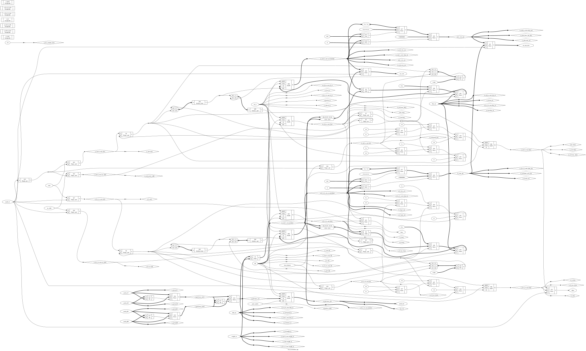
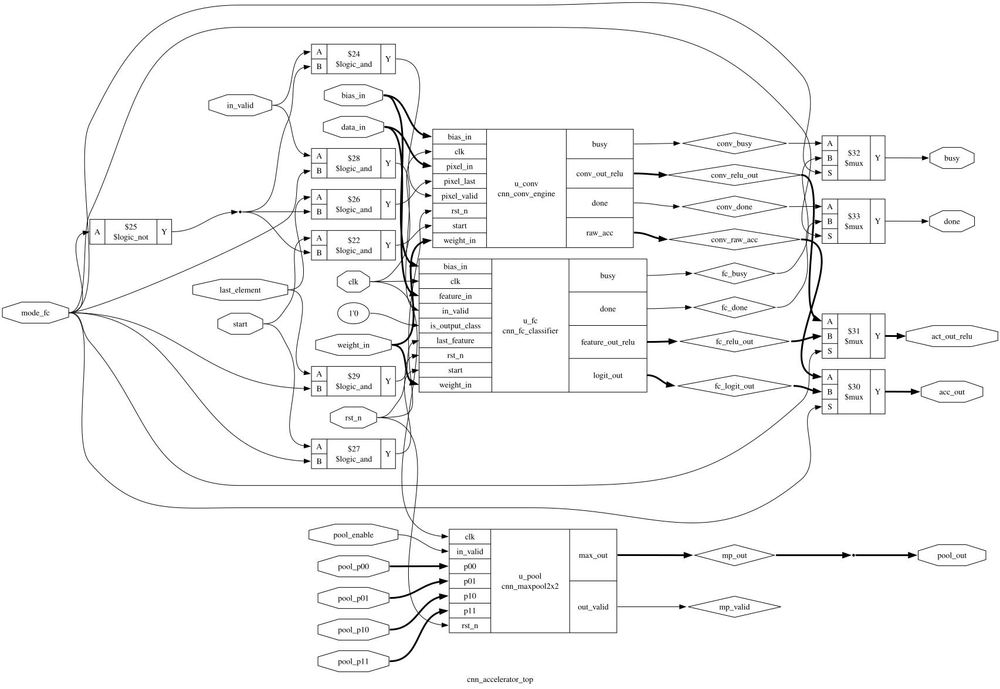
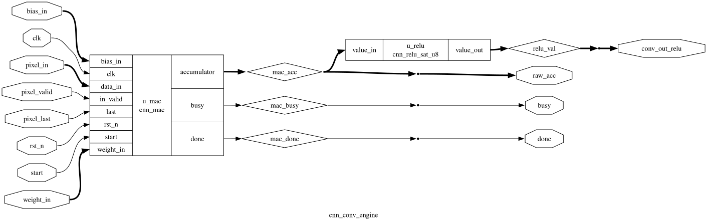
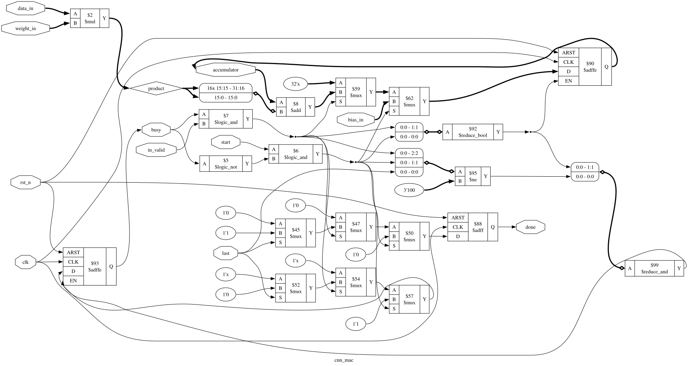

Synthesized with Yosys Open SYnthesis Suite (v0.52) targeting generic logic gates.
Displays the actual digital hardware cells, registers, multiplexers, and arithmetic dataflow built for the CNN accelerator.
Every sub-module (MAC multipliers, accumulators, ReLU clamping networks, and MaxPool trees) fully flattened into interconnected logic gates and registers.

cnn_accelerator_top)Multiplexes input activations and weights between the Convolution Engine (u_conv) and the Fully Connected Classifier (u_fc), feeding the parallel 2x2 Max Pooling Engine (u_pool).

cnn_conv_engine)Integrates the signed INT8 MAC unit with the ReLU activation and saturation logic (cnn_relu_sat_u8).

cnn_mac)Synthesized hardware multiplier ($8 \times 8 \to 16$-bit signed) accumulator with 32-bit register accumulator and synchronous clear.
